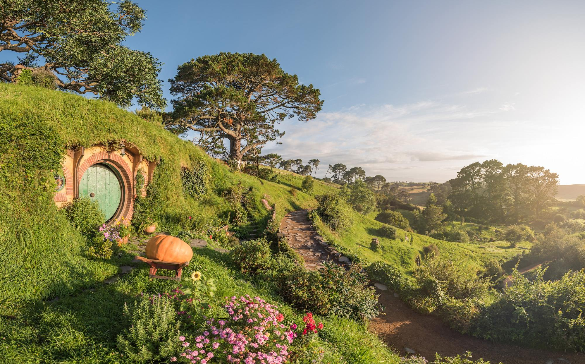
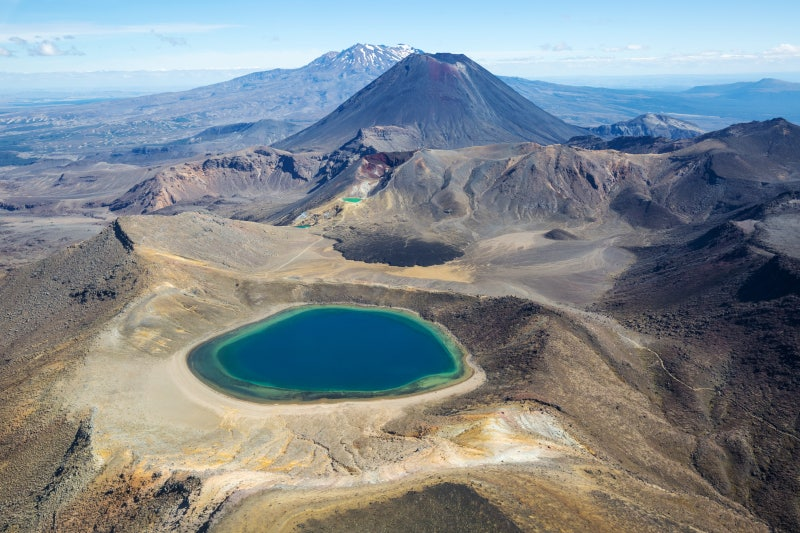

반지의 제왕 (The Lord of the Rings)
중간계를 배경으로 절대반지를 파괴하려는 여정을 그린 판타지 서사시입니다. 뉴질랜드의 광활한 자연 — 호비튼의 초원과 통가리로의 화산 지대 — 이 영화 속 환상의 세계를 그대로 구현해, 자연 그 자체가 주인공이 됩니다.
주요 촬영지 & 스틸컷

호비튼 마을
호빗들이 사는 샤이어 마을 세트가 보존된 곳.

통가리로 국립공원
모르도르와 운명의 산의 배경.
성지순례 여행 루트
- 호비튼 마을 — 마타마타의 샤이어 세트장 투어로 시작.
- 통가리로 국립공원 — 운명의 산이 된 화산 지대 트레킹.
- 웰링턴 — 영화 제작의 본거지에서 여정 마무리.